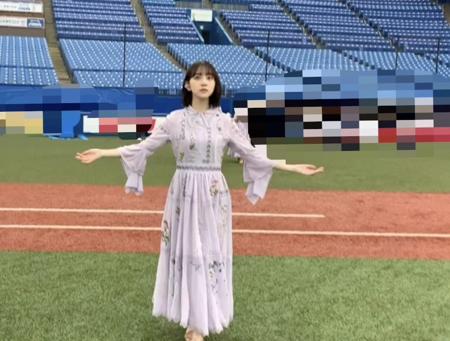
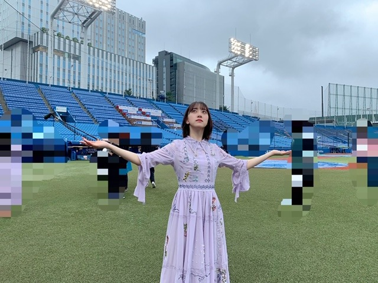
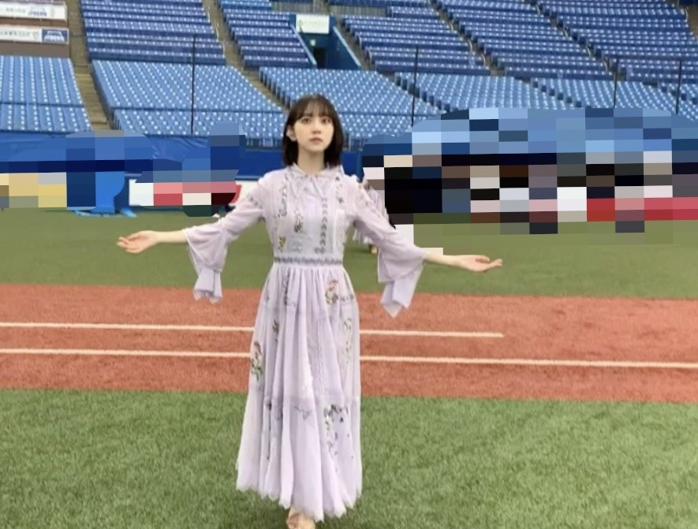
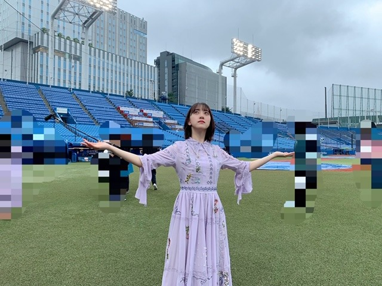

2020/0723ThuRoute 246
配信限定シングル
Route 246のteaserが公開されました
乃木坂がteaserってなんか新鮮ですよね〜
わたしも12時にYouTubeをみて
びっくりしました
まあ、それはさておき
衣装をご紹介します

紫ピンクでダンスナンバーに合うかんじです
ヘアピンとかイヤリングが可愛くて
そこにも注目していただけたら嬉しいです〜
明日のMステで初披露なので
よかったらみてください

おんぷちゃんヘア♩
紫のエクステをインナーカラーみたいなかんじで
みんなでつけてます♩
.
最近は寝ても寝ても
ねむい...>_<...

" 今から晴れるよ "
天気の子ごっこを日奈子としてたら
ちょっと晴れました

天気1つでその日の気持ちが変わるのは
不思議です
たまには泣いてもいいんだよと
人が人に言うのと同じように
空にも涙が出る日はあって
わたしたちはそんな空と繋がっていると思います
だから雨をも受け入れなきゃだし
晴れたらめいっぱい太陽を浴びるべきだなって
明日の天気は予報だけでは確かじゃないけど
明日になればわかるものです
そんなかんじで今を生きていきたいです
では！
配信限定シングル
Route 246のteaserが公開されました
乃木坂がteaserってなんか新鮮ですよね〜
わたしも12時にYouTubeをみて
びっくりしました
まあ、それはさておき
衣装をご紹介します
紫ピンクでダンスナンバーに合うかんじです
ヘアピンとかイヤリングが可愛くて
そこにも注目していただけたら嬉しいです〜
明日のMステで初披露なので
よかったらみてください
おんぷちゃんヘア♩
紫のエクステをインナーカラーみたいなかんじで
みんなでつけてます♩
.
最近は寝ても寝ても
ねむい...>_<...

" 今から晴れるよ "
天気の子ごっこを日奈子としてたら
ちょっと晴れました

天気1つでその日の気持ちが変わるのは
不思議です
たまには泣いてもいいんだよと
人が人に言うのと同じように
空にも涙が出る日はあって
わたしたちはそんな空と繋がっていると思います
だから雨をも受け入れなきゃだし
晴れたらめいっぱい太陽を浴びるべきだなって
明日の天気は予報だけでは確かじゃないけど
明日になればわかるものです
そんなかんじで今を生きていきたいです
では！
2020/07/23 20:18


コメント(325)
Route246聞きました！ザ・小室哲哉さんという感じでめちゃくちゃかっこよかったです！これは日村さんも絶対好きになりますね！笑
Mステ絶対見ます！
シブヤノオトは録画しておいたから暇な時見る！！その時間帯は西野七瀬ちゃんが出てるアンサングシンデレラっていうドラマ見てたからね。
Route246聞いたよ！！初オンエアはオールナイトニッポンやったけどすぐに寝落ちしたからYouTubeで探して聞いた。いやぁまじでカッコよすぎる。LINEMUSICのプレイリストにもすぐ入れといたよ。Mステは塾の時間と被るから録画しとくね！！
衣装可愛い(〃^ー^〃)
そしてお洒落！
紫のエクステも衣装に合う♪
１日１日どうなるかはその日にしか分からないよね
だからこそ楽しまなくちゃ
明日も未央奈ちゃんにHAPPYを
お休みなさい(^-^ゞ
ブログ更新ありがとう
シブヤノオト見ました
何度目の青空か？ 世界中の隣人よ Believe
神宮からフルでなんて、ライブが解散できない今、
今年は無理だと思っていましたが、
まさかTVで見れるとは思ってませんでした。
本当に嬉しく、有難かったです。
雨の中の収録本当にお疲れ様でした。
明日のMステも頑張って！！
衣装は今までとはガラッと変わってますね。何となく幼い印象です。Mステも楽しみにしてます。
あとシブヤノオト見ましたよ。堀さんは立ち姿がスッとしてて綺麗です。それで何度目の青空か見てたら結構本気で救われました。最近心身共に消耗してたせいか本来関係無い筈のニュースで滅入ってしまって落ち込んでたんですけど、曲のおかげで-10が-5になるぐらいにはマシになりました。あとは時間をかけてプラスに持っていこうと前向きに思えました。
天気の子ごっこは写真見る限り歩き回りながらやったんですね。雨も実際に止めてて見事です。雨を受け入れるのって自分の気持ちを受け入れるってことなんですね。僕は主人公が泣けるようになる映画が好きなのですが、無意識に憧れてるのかもしれないです。
予報や、予報が外れた過去に囚われずに夢中に今を生きれるように、堀さんを見習いたいと思います。いつも救ってくれてありがとうございます。
へそ出し最高！！エクステとかヘアピンとかイアリングとか全部が可愛くてカッコイイもあって、The乃木坂46って感じがします！
Mステ見ます！
シブヤノオトは、本当に感動しました〜(´；ω；｀)
人は色々な感情をもつ。
でもそれはいけないことではなく大切なこと。
いつか晴れる日を夢見てお互い頑張りましょう!!!天気の子風のお写真で運気上がったので♪
今日も大好き⸜❤︎⸝
普段色々努力してるんだろうな。そう感じるわ。
route246のパフォーマンスも楽しみにしてます。頑張ってね✊
密かにセンター堀未央奈をと願いましたが願掛け思い届かず(T-T)
でも、久し振りにテレビで堀ちゃん達の活動が観れるから、とってもうれしい
いつも応援してます❗イベント開催はまだまだ難しいから会いに行けませんが、声援しています(///∇///)❗❗
お身体に気をつけて （特に口内炎） 活動を頑張って下さい
みおな超かわいい( ☆∀☆)
美脚もたまらない‼
１日でいいから
かわいくてスタイルいい、みおなになりたい笑
みおなのカラダと入れ替わりたい笑
みおなになってオシャレしてメイクしてお出かけしたい笑
小室サウンド、ある年齢層の方には
懐かしいようですね。
でもさすがに実績がある方なので
乃木坂の新しい一面を引き出している
ように思います！
日本にとっての応援歌になること
期待しています！！！
それではＭステ、頑張ってくださいね！！！
応援しています！！！
素敵です
おはよう
おっと
新衣装、、ショートパンツ
昨夜の『シブヤノオト』観ましたよぉーー
『何度目の青空か』フルバージョン
よかったなぁーー乃木坂の好きな曲俺の中でも
上位ですから
『世界中の隣人よ』の歌唱時
雨、、、神宮
やっぱり降りましたね
今夜のMステSP楽しみです
では
埋め合わせにこの梅雨時４連休中に堀未央奈写真集パネル展やイベントに行くよ。必ず
root246解禁されましたね〜
曲調がかっこよくて
今までの乃木坂にはない雰囲気があって
歌詞が所々に面白い表現があって
やっぱりみんなの声は透き通っていて
とにかくすごかった！！
ミュージックステーションの
ダンスが気になってます！
シブヤノオトに2期生全員が
出ていて思わずガッツポーズを
してしまいました
改めて2期生はカッコイイって
感じました！！
次のブログも楽しみにしてます
今日のMステ楽しみにしてるね！
Route 246ラジオで聴いたけど、良き！
メロディが好き！
空って見てて落ち着くよね。
いろんな表情があって生き物みたい！
今日はどんな表情を見せてくれるんだろう？？
では！
堀ちゃんが3人いるのに、びっくりしたよ！
今日も元気に頑張ります。
堀ちゃんも体には気を付けて！
シブヤノオト見ました。
今日のMステも新曲(衣装も)楽しみにしてます！！
リアルタイムでは見れないので録画してみます！
未央奈が可愛くて美しくて…(*'▽'*)
似合ってますよー！！
この曲って、横浜の大さん橋で撮影したとかって書いてあったよね。
ふむふむ、衣装はこんな感じなのか
神宮は雨の中おつかれさまでした～！
メンバーの中に雨女さんがいるって聞いたことあった気がしたけど、堀ちゃんかきいちゃんのどちらかは晴れ女さんなのかな。
なんか、きいちゃんっぽいね
Route 246 ダウンロードして鬼リピートして聞いてるよ！
Mステ 楽しみ！
地球だって泣きたい時は有るはずだよね、
今日は今日の楽しみ、
明日は明日の楽しみ。
未央奈は未央奈のままで、
最高の笑顔を！
シブヤノオトを見て改めて乃木坂っていいな！すっごく元気をもらえました。今日のmステ楽しみにしてます
新曲の衣装とってもかわいいです❤️
これからも応援してるよ頑張って
俺も頑張るよーん
おはよう☀️！
Route 246フルで聴いたよ！
すごく格好いいし、良い曲だね！
たくさん聴きます！！
今日のMステで始めてパフォーマンスしてる姿見れるから楽しみにしてるね♪
未央奈大好き～❤️
おんぷちゃんヘア可愛い❤️
日奈子ちゃんとのお天気ごっこ可愛い❤️その中からいろんな事連想出来るのが未央奈ちゃんの魅力であり好きなとこです。
新曲頭から離れん笑
未央奈ちゃんがどのポジションでも応援させてください^o^
未央奈ちゃん大好きです
いつもありがとう♡
いつもの乃木坂の長めのスカートとは違って
少しカジュアルでダンスナンバー向きの衣装でかっこいいね
紫のエクステがパフォーマンス中にチラって見えるのが楽しみ！
人間は自然と共存してるから自然を受け入れて雨なら雨を受け止めて晴れなら太陽しっかり浴びて生きてかなきゃだね！
自然ともっと仲良くなりたい
・"マイスパイ"を観たよ(^^)アクション・コメディ好きとしては良き作品だった•̀.̫•́✧CIAのエージェントでぶっきらぼうなクマみたいな脳筋主人公ＪＪと、監視する部屋の一人娘で、転校してきて友達がいないぼっちの少女が、次第に心を通わせて主人公が人間味を取り戻していくお話しかな。
少女が飼ってる犬が可愛かった( ͡° ͜ʖ ͡°)クマみたいなＪＪも、人間味を取り戻していくうちに、可愛く思えてくる不思議さ。笑
興味があるなら観てね(•ө•)♡
・今からアスを観るよーがんばみおなー
シブヤノオト観ましたよ♪
何度目の青空か？と
世界中の隣人よのフル尺で
神宮球場からでしたね(^^)
途中で雨が降ってきてたけど..
それも乃木坂らしくて良きかな◎
やっぱり乃木坂には元気もらえます！
Mステも楽しみにしてるね(*^^*)
乃木坂カラーの紫色、昔はヤンキーカラーだったけど、今や乃木坂カラーに定着してるよね。
僕も１番好きな色。
シブヤノオトみたよ。
やっぱり未央奈ちゃんが１番可愛かった
今晩のMステ、頑張ってね❤️
パネル欲しいから2冊写真集追加購入したよ。
少ないけど自分は2って数字に縁があってさ。
これでパネルゲット出来たらいいな!
22冊買う予算がありませんでした!
でも堀ちゃんが好きなのは変わらないよ。
あ〜好きって簡単に伝えたく無いんだけどね。
書かなきゃ伝わらないし。
ここぞって時に言いたい言葉なんだよね!
愛してます!
ではコメントまたおじゃまします!
紫のエクステもめちゃ似合ってて可愛い魅力的過ぎる♪
ホント未央奈ちゃんは魅力的で好きだわぁ
天気のはなし心に響く。
衣装もほんとに似合ってる！！
めちゃくちゃ未央奈っぽいよお！！
バレッタのイントロが流れるとめっちゃワクワクします！
未央奈大好きです！
僕は昨日、日帰りで名古屋の近鉄パッセの写真展に行ってきょうは地元博多マルイのHMVでの写真展に行ったよ。
もちろん両会場で写真集を買ってパネルプレゼントに応募したよ。
写真も撮ったよ。
コメントする